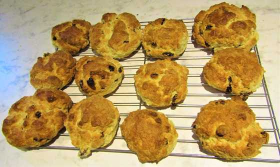
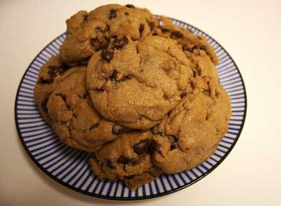

SWEETS
ケーキと焼き菓子
フランス菓子をベースに、素材にこだわって作る、口当たりの軽いケーキと焼き菓子のお店と紹介されています(2022年の取材記事より)。店主おすすめはモンブラン、ショートケーキも人気とのことです。品ぞろえ・価格は変わることがあるため、詳細は準備中です。
下の写真はフリー素材のイメージで、お店の商品ではありません。





VOICE
口コミ(イメージ例)
以下は制作側が創作したイメージ例で、実在の声ではありません。
イメージ例
駅の近くで見つけたら、ショーケースのケーキがどれもきれいで迷ってしまいそう。
イメージ例
甘さが軽めだと、ついもう一つ食べたくなる。お土産の焼き菓子も選んでみたい。
イメージ例
誕生日には、ここのケーキでお祝いしたら家族も喜びそう。
ABOUT
お店のこと
店主はフランスで菓子作りを学び、フランス菓子を土台にアレンジを加えたケーキと焼き菓子をお店に並べています。お店は2022年5月20日に須賀川駅近くでオープンしました(食べログ・地域メディアの記事より)。
店名「ラ・ボンベル」の意味や由来は確認できていません。制作側のイメージとして、フランス語の「bon(良い)」「belle(美しい)」を思わせる響きを、サイトの軽やかな雰囲気に生かしています。


